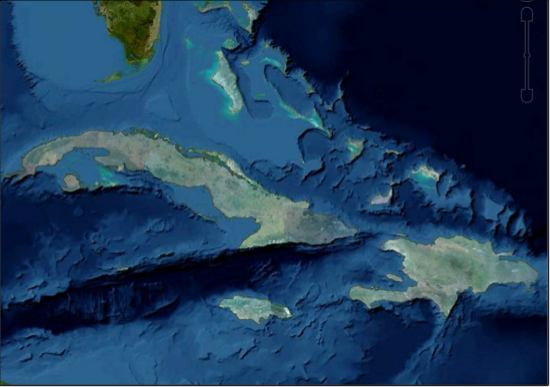

Google Earth Enterprise Documentation Home | Release notes
Release notes: GEE 5.0
This document includes the following information about the Google Earth Enterprise 5.0 release:
Overview
GEE 5.0 introduces a flexible and dynamic approach to publishing maps and globes. When publishing, you specify unique options for a map or globe at a given URL; the map or globe can then be easily published multiple times at different URLs with different configurations. Likewise, particular configurations can quickly be unpublished or modified.
Virtual hosts (previously called virtual servers) now only specify a security protocol and can be associated with multiple published globes and maps. This decouples the task of setting up security protocols from publishing maps and globes.
Associating search sets and snippets at the time of publishing allows you to present different versions on the same underlying Fusion database, which can then be made available at different URLs and under different security protocols. For example, to protect one set of searchable data but display it on the same globe as you do an unprotected set of searchable data. You might then publish the database at one URL with the sensitive search and a secured virtual host, then publish the same database at a different URL with a non-sensitive search and public virtual host.
All of this can be done in a matter of seconds from the new GEE Server Admin console, and no longer requires interaction with Fusion. We hope that this new publishing approach makes your life easier and maybe even a little more fun!
Supported Platforms
The Google Earth Enterprise 5.0 release is supported on 64-bit versions of the following operating systems:
- Ubuntu 10.04 LTS and 12.04 LTS
- Red Hat Enterprise Linux versions 6.0 to 6.5, including the most recent security patches
- CentOS 6.5
GEE 5.0 is compatible with Google Earth Enterprise Client (EC) and Plugin versions 7.0.1 - 7.1.1.1888 for Windows, Mac, and Linux.
New Features
GEE Server:
- New GEE Server Admin console for managing and publishing maps and globes, available at myserver.mydomainname.com/admin. The default credentials are:
- Username: geapacheuser
- Password: geeadmin
- To reset the username and password:
sudo /opt/google/gehttpd/bin/htpasswd -c /opt/google/gehttpd/conf.d/.htpasswd geapacheuser
- From the GEE Server Admin console:
- Publish databases and portables using easily-specified publish points.
- Publish one map or globe to multiple URLs with multi-target publishing. Each publish point can have a different set of end_snippets and search services for a served database.
- Register portables for easy managing and publishing.
- Easily crate and associate snippets with your databases while publishing using Snippet profiles.
- Define and add multiple search tabs.
- New publishing and serving backend that doesn't require server restart while publishing.
- Upgrades to support the latest Google Earth protocol, allowing alpha-masked imagery and modern imagery packet specification (supported by Earth EC versions 7.0 and later).
- Native WMS capability: Use GEE Server as a WMS endpoint to serve layers from 3D globes and 2D maps.
Fusion:
- Alpha-masked imagery for publishing imagery insets that will seamlessly overlay on top of other GEE 3D databases. Imagery project consisting of only a high-resolution inset

Addition of secondary database with worldwide lower-resolution imageryGoogle Earth Enterprise Server cutting feature:
- New user interface to simplify the Portable cutting process.
- Support for cutting portable globes and maps from either .glbs or .glms files.
- Enable cutter using
gecutter enable
New Directory Structure for Google Maps Javascript Maps API:
- The current Google Maps Javascript Maps API V3 is 3.12.17. Maps API 3.9.x and later uses a simplified directory structure. In the new structure, the latest version of Maps API is always in /maps/api. To upgrade to 3.12.17, change your code to upload from the /maps/api directory. To load the new Maps API from the /maps/api directory, preface your code with these lines:
<script type="text/javascript" src="http://your_gee_server.com/maps/api/bootstrap_loader.js"></script>
<script type="text/javascript" src="http:/your_gee_server.com/maps/api/fusion_map_obj_v3.js"></script>
<script type="text/javascript" src="http://your_gee_server.com/default_map/query?request=Json&var=geeServerDefs"></script>
Visit this link To view or download sample code that loads Maps API 3.9.x.
Native WMS from GEE Server:
Google Earth Enterprise Server 5.0 supports the GetCapabilities and GetMap requests for WMS versions 1.1.1 and 1.3.0. To enable WMS for a database you want to publish:
- In the GEE Server Admin console, click Databases.
- Check the box next to the database you want to publish.
- Click Publish.
- Next to Serve WMS, select On.
Serve Flat maps as Mercator:
The GEE Server doesn’t let you serve Plate Carrée (flat) maps, but WMS can rebuild your Plate Carrée maps as Mercator maps. If you republish your maps, WMS serves your Plate Carrée imagery tiles as Mercator. You can use Fusion to build your own Mercator vector layer to overlay on the imagery tiles. The client combines the layers when it displays the map. Note: The Google Maps API uses the Mercator projection and Google’s iOS and Android apps only display Mercator maps.
Change your projection:
You can use a third-party application like MapServer to reproject your native WMS on-the-fly (for example, to change your projection from Mercator to Finnish National Coordinate System). GEE supports most GDAL projections.
Third-party Library Updates:
- GDAL 1.10.0 compiled with support for:
- BigTIFF (TIFF files larger than 2 GB)
- Python bindings (See examples)
- Apache 2.2.25
- Apache httpd 2.2.23
- libattr 2.4.46
- libcap 2.19
- libmng 1.0.10
- libjpeg 8.0
- Python 2.7.5
- No Java dependencies (JDK, Tomcat connectors, mod_jk) in Fusion and Server. You still need a valid JRE (any version) to run the installers.
Known Issues
| Number | Description | Workaround |
|---|---|---|
| 7239735 | If libc.so.6 is located in a directory other than /lib, the installer and uninstaller display a message that /lib/libc.so.6 is missing. No known problems are associated. | Ignore the message and continue to install or uninstall. |
| 7531358 | Each terrain project (even terrain insets) must have worldwide resource. If not, the build fails with a "Fusion Fatal: Empty inset stack" error. This error is typically caused by the terrain project not having a base terrain resource with complete global coverage. | Include a low-resolution global terrain resource such as Gtopo (land only) or Etopo (bathymetry and land) with the terrain project, and then rebuild the database. |
| 11715339 | The Preview option in the GEE Server Admin console Databases window fails to display any preview for Fusion 3D databases. |
|
Resolved Issues
| Number | Description | Resolution |
|---|---|---|
| 7443814 | Certain polygon datasets with invalid geometries cause Fusion processing to hang. | Fixed in Fusion vector processing pipeline. |
| 7442639 | GEE supports only one field per custom Search tab in EC 6.2 and later. If you want to include multiple fields in your Search tabs, use EC 6.1. | The 5.0 release supports EC 7.0 and later. To include multiple Search tab fields for EC 7.0 or later:
|
| 6888196 | Publish fails with "Unable to parse POI file" in log. | Fixed in POI-file parsing scheme and POI data managing. |
| 5570955 | Postgres service running after GEE Server installer exits. | Fixed in installer. |
| 7521159 | A double slash in the -o option breaks genewterrainproject. | Fixed in asset managing scheme. |
| 885079 | Ability to assign dbroot snippets at database and virtual server level. | Fixed with new publisher. |
| 6611496 | geserveradmin reports successful delete for nonexistent entities. | Fixed in publisher back end. |